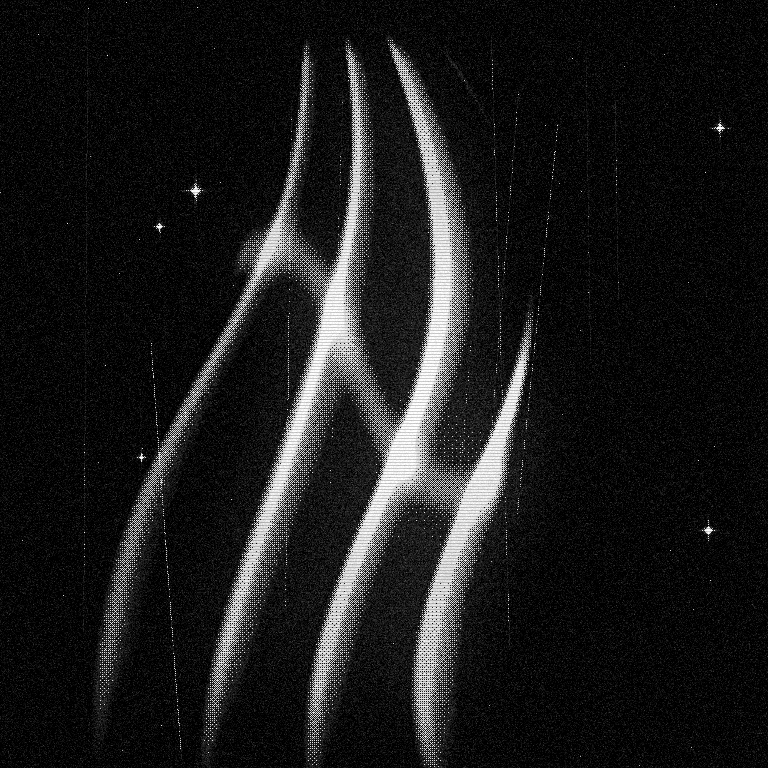

Release / 003 · local sample
Still light
- 01Halation
- 02Scratched film
- 03Cold tint
- 04Edge loss
Fate UI · 2026 · synthetic fixture, not a photograph
Notes
The frame stays hard. The light stays soft. The image is blown to white, haloed, grained, and dissolved into the ground before it reaches the page. The controls below it get none of that.
Grain, scanlines, and the edge fade are separate layers on the stage. Remove them and the layout does not move.
Tracks
| No | Track | Note | Length |
|---|---|---|---|
| 01 | Halation | Clipped white, blurred, screened back | 4:12 |
| 02 | Scratched film | Ten seeded lines, one pass | 5:03 |
| 03 | Cold tint | Blue in the void, cyan in the white | 3:58 |
| 04 | Edge loss | Radial fade baked before dither | 5:29 |